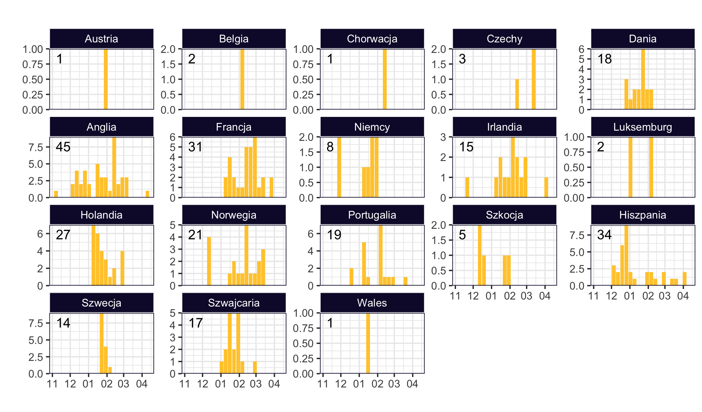
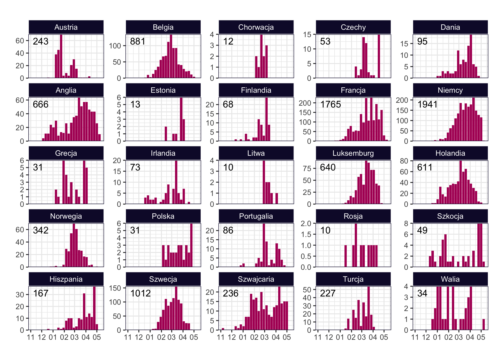
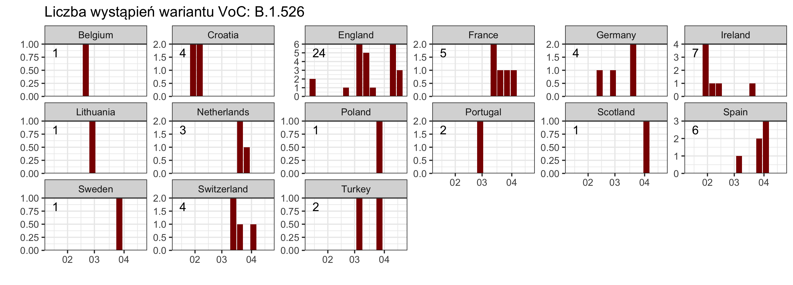

Variants under monitoring
Zgodnie z nomenklaturą ECDC tą nazwą określa się warianty, wykryte poprzez wywiad epidemiologiczny, oparte na regułach przesiewania wariantów genomowych lub wstępne dowody naukowe. Istnieją pewne przesłanki wskazujące, że mogą one mieć właściwości podobne do właściwości VOC, ale dowody są słabe lub nie zostały jeszcze ocenione przez ECDC. Wymienione tu warianty muszą być obecne w co najmniej jednym ognisku, wykryte w społeczności w UE/EOG lub muszą istnieć dowody na to, że wariant ten jest przenoszony przez społeczność w innym miejscu na świecie.
Obecnie dla SARS-COV-2 zdefiniowano następujące Vum:
- B.1.214.2. Kluczowe mutacje: Q414K, N450K, ins214TDR, D614G.
- A.23.1+E484K. Kluczowe mutacje: E484K, Q613H.
- A.27. Kluczowe mutacje: L452R, N501Y, H655Y.
- A.28. Kluczowe mutacje: E484K, N501T, H655Y.
- C.16. Kluczowe mutacje: L452R, D614G.
- C.37. Kluczowe mutacje: L452Q, F490S, D614G.
- B.1.351+P384L. Kluczowe mutacje: P384L, K417N, E484K, N501Y, D614G.
- B.1.351+E516Q. Kluczowe mutacje: K417N, E484K, N501Y, E516Q, D614G.
- B.1.1.7+L452R. Kluczowe mutacje: L452R, N501Y, D614G.
- C.36+L452R. Kluczowe mutacje: L452R, D614G.
- AT.1. Kluczowe mutacje: E484K, D614G.
- B.1.526. Kluczowe mutacje: E484K, D614G.
- B.1.526.1. Kluczowe mutacje: L452R, D614G.
- B.1.526.2. Kluczowe mutacje: S477N, D614G.
- B.1.1.318. Kluczowe mutacje: E484K, D614G.
- P.2. Kluczowe mutacje: E484K, D614G.
Nie wszystkie te warianty są obecne w Europie w znaczącej liczbie.
  